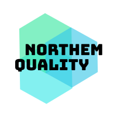
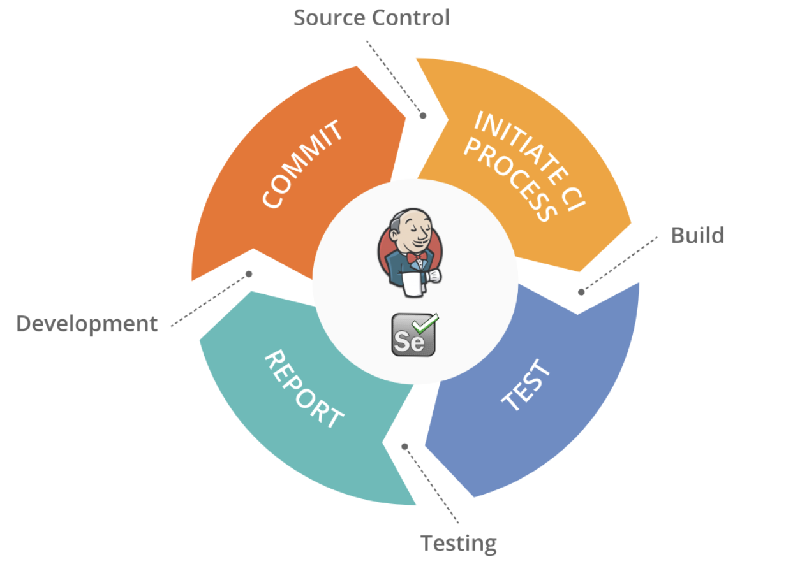

Una comunidad Online de testing e ingeniería!
Como comunidad, queremos intentar impulsar el crecimiento del testing y la ingeniería de la calidad a través de diferentes iniciativas online. Podéis ver y proponer actividades desde nuestro repositorio de GitHub.
Las actividades se emitirán principalmente en streaming en nuestro canal de YouTube. Mediante Twitter y nuestro canal de Slack os iremos informando de todas las actividades!
Revisa nuestros eventos pasados

2 de Mayo 2019, 19:00 CET
Cypress: cómo mantener el amor tras las primeras citas.
Alberto Gualis.
La documentación de Cypress está genial. La experiencia de uso y resultados iniciales son espectaculares pero hay algunos detallitos a tener en cuenta si quieres sostener una relación feliz a largo plazo.
Más información
Enlace al video

16 de Mayo 2019, 19:00 CET
Proceso de testing dentro del sistema de CI/CD.
Mesa redonda donde hablaremos desde diferentes puntos de vista el proceso de testing dentro de un sistema de CI/CD.
Más información
Enlace al video